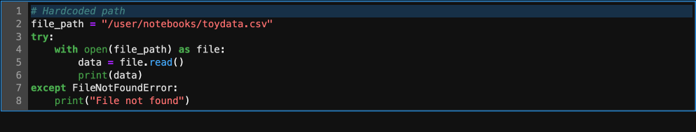
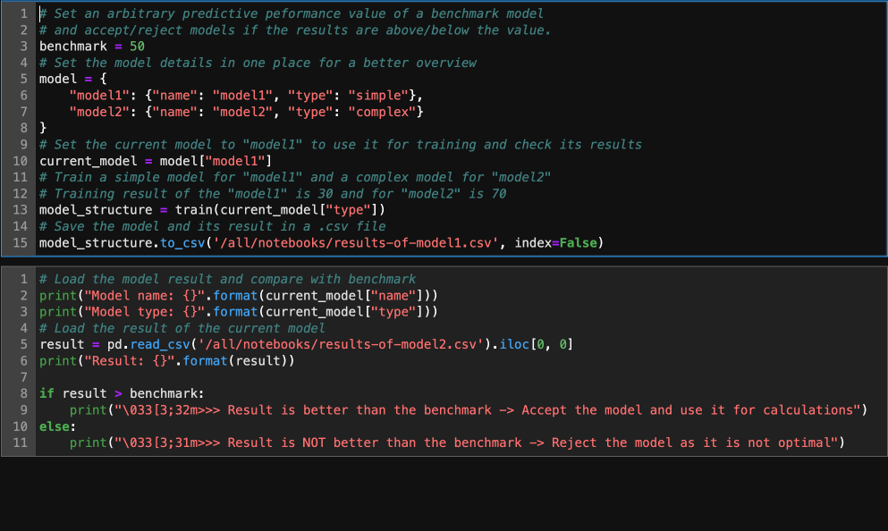
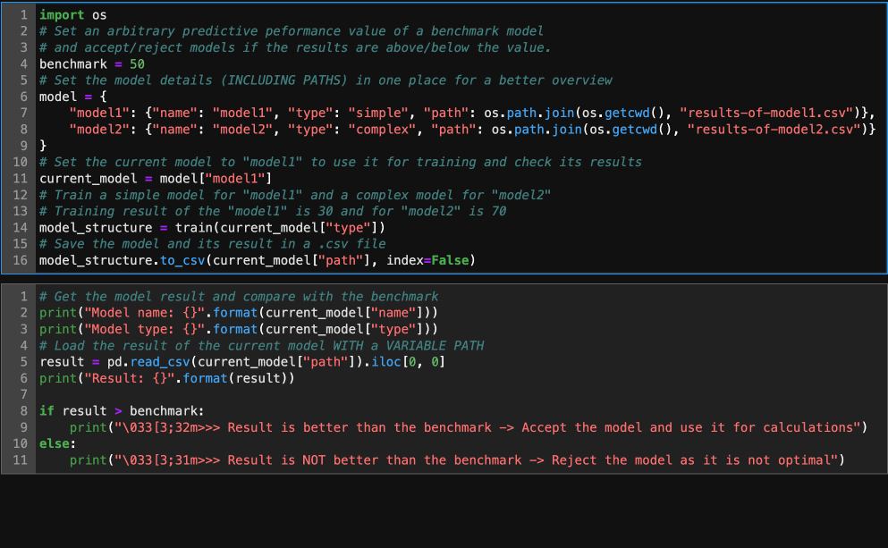
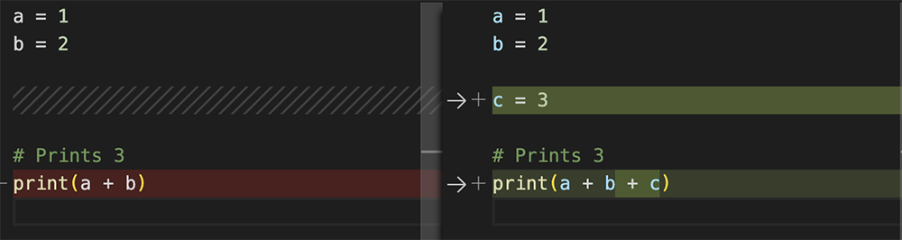

Reproducibility, or “the ability of a researcher to duplicate the results of a prior study using the same materials as the original investigator”, is critical for sharing and building upon scientific findings. Reproducibility not only verifies the correctness of processes leading to results but also serves as a prerequisite for assessing generalisability to other datasets or contexts. This we refer to as replicability, or “the ability of a researcher to duplicate the results of a prior study if the same procedures are followed but new data are collected”. Reproducibility, which is the focus of our work here, can be challenging – especially in the context of deep learning. This article, and associated material, aims to provide practical advice for overcoming these challenges.
Our story begins with Davit Svanidze, a master’s degree student in economics at the London School of Economics (LSE). Davit’s efforts to make his bachelor’s thesis reproducible are what inspires this article, and we hope that readers will be able to learn from Davit’s experience and apply those learnings to their own work. Davit will demonstrate the use of Jupyter notebooks, GitHub, and other relevant tools to ensure reproducibility. He will walk us through code documentation, data management, and version control with Git. And, he will share best practices for collaboration, peer review, and dissemination of results.
Davit’s story starts here, but there is much more for the interested reader to discover. At certain points in this article, we will direct readers to other resources, namely a Jupyter notebook and GitHub repository which contain all the instructions, data and code necessary to reproduce Davit’s research. Together, these components offer a comprehensive overview of the thought process and technical implementation required for reproducibility. While there is no one-size-fits-all approach, the principles remain consistent.

Credit: Discord software, Midjourney bot.
Davit’s journey towards reproducibility
More power, please
The focus of my bachelor’s thesis was to better understand the initial spread of Covid-19 in China using deep learning algorithms. I was keen to make my work reproducible, but not only for my own sake. The “reproducibility crisis” is a well-documented problem in science as a whole,1 2 3 4 with studies suggesting that around one-third of social science studies published between the years 2010 and 2015 in top journals like Nature and Science could not be reproduced.5 Results that cannot be reproduced are not necessarily “wrong”. But, if findings cannot be reproduced, we cannot be sure of their validity.
For my own research project, I gathered all data and started working on my computer. After I built the algorithms to train the data, my first challenge to reproducibility was computational. I realised that training models on my local computer was taking far too long, and I needed a faster, more powerful solution to be able to submit my thesis in time. Fortunately, I could access the university server to train the algorithms. Once the training was complete, I could generate the results on my local computer, since producing maps and tables was not so demanding. However…
Bloody paths!
In switching between machines and computing environments, I soon encountered an issue with my code: the paths, or file directory locations, for the trained algorithms had been hardcoded! As I quickly discovered, hardcoding a path can lead to issues when the code is run in a different environment, as the path might not exist in the new environment.
As my code became longer, I overlooked the path names linked to algorithms that were generating the results. This mistake – which would have been easily corrected if spotted earlier – resulted in incorrect outputs. Such errors could have enormous (negative) implications in a public health context, where evidence-based decisions have real impacts on human lives. It was at this point that I realised that my code is the fundamental pillar of the validity of my empirical work. How can someone trust my work if they are not able to verify it?
The following dummy code demonstrates the hardcoding issue:
```{python}
# Hardcoded path
file_path = "/user/notebooks/toydata.csv"
try:
with open(file_path) as file:
data = file.read()
print(data)
except FileNotFoundError:
print("File not found")
```
In the code above, a dummy file (toydata.csv) is used. The dummy file contains data on the prices of three different toys, but only the path of the file is relevant to this example. If the hardcoded file path – "/user/notebooks/toydata.csv" – exists on the machine being used, the code will run just fine. But, when run in a different environment without said path, the code will result in a "File not found error". Better code that uses relative paths can be written as:
```{python}
# Relative path
import os
file_path = os.path.join(os.getcwd(), "toydata.csv")
try:
with open(file_path) as file:
data = file.read()
print(data)
except FileNotFoundError:
print("File not found")
```
You can see that this code has successfully imported data from the dataset toydata.csv and printed its two columns (toy and price) and three rows.
The following example is a simplified version of what happened when I wrote code to train several models, store the results and run a procedure to compare results with the predictive performance of a benchmark model:
```{python}
# Set an arbitrary predictive performance value of a benchmark model
# and accept/reject models if the results are above/below the value.
benchmark = 50
# Set the model details in one place for a better overview
model = {
"model1": {"name": "model1", "type": "simple"},
"model2": {"name": "model2", "type": "complex"}
}
# Set the current model to "model1" to use it for training and check its results
current_model = model["model1"]
# Train a simple model for "model1" and a complex model for "model2"
# Training result of the "model1" is 30 and for "model2" is 70
model_structure = train(current_model["type"])
# Save the model and its result in a .csv file
model_structure.to_csv('/all/notebooks/results-of-model1.csv', index=False)
``````{python}
# Load the model result and compare with benchmark
print("Model name: {}".format(current_model["name"]))
print("Model type: {}".format(current_model["type"]))
# Load the result of the current model
result = pd.read_csv('/all/notebooks/results-of-model2.csv').iloc[0, 0]
print("Result: {}".format(result))
if result > benchmark:
print("\033[3;32m>>> Result is better than the benchmark -> Accept the model and use it for calculations")
else:
print("\033[3;31m>>> Result is NOT better than the benchmark -> Reject the model as it is not optimal")
```
Everything looks fine at a glance. But, if you examine the code carefully, you may spot the problem. Initially, when I coded the procedure (training the model, saving and loading the results), I hardcoded the paths and had to change them for each tested model. First, I trained model2, a complex model, and tested it against the benchmark (70 > 50 → accepted). I repeated the procedure for model1 (a simple model). Its result was identical to model2, therefore I kept model1 following the parsimony principle.
However, for the code line loading the result for the current model (line 5, second cell), I forgot to amend the path and so mistakenly loaded the result of model2. As a consequence, I accepted a model which should have been rejected. These wrong results were then spread further in the code, including all charts and maps and the conclusions of my analysis.
A small coding error like this can therefore be fatal to an analysis. Below is the corrected code:
```{python}
import os
# Set an arbitrary predictive performance value of a benchmark model
# and accept/reject models if the results are above/below the value.
benchmark = 50
# Set the model details (INCLUDING PATHS) in one place for a better overview
model = {
"model1": {"name": "model1", "type": "simple", "path": os.path.join(os.getcwd(), "results-of-model1.csv")},
"model2": {"name": "model2", "type": "complex", "path": os.path.join(os.getcwd(), "results-of-model2.csv")}
}
# Set the current model to "model1" to use it for training and check its results
current_model = model["model1"]
# Train a simple model for "model1" and a complex model for "model2"
# Training result of the "model1" is 30 and for "model2" is 70
model_structure = train(current_model["type"])
# Save the model and its result in a .csv file
model_structure.to_csv(current_model["path"], index=False)
``````{python}
# Get the model result and compare with the benchmark
print("Model name: {}".format(current_model["name"]))
print("Model type: {}".format(current_model["type"]))
# Load the result of the current model WITH a VARIABLE PATH
result = pd.read_csv(current_model["path"]).iloc[0, 0]
print("Result: {}".format(result))
if result > benchmark:
print("\033[3;32m>>> Result is better than the benchmark -> Accept the model and use it for calculations")
else:
print("\033[3;31m>>> Result is NOT better than the benchmark -> Reject the model as it is not optimal")
```
Here, the paths are stored with other model details (line 7–8, first cell). Therefore, we can use them as variables when we need them (e.g., line 16, first cell, and line 5, second cell). Now, when the current model is set to model1 (line 11, first cell), everything is automatically adjusted. Also, if the path details need to be changed, we only need to change them once and everything else is automatically adjusted and updated. The code now correctly states that model1 performs worse than the benchmark and is therefore rejected and we should keep model2, which performs best.
I managed to catch this error in time, but it often can be difficult to spot our own mistakes. That is why making code available to others is crucial. A code review by a second (or third) pair of eyes can save everyone a lot of time and avoid spreading incorrect results and conclusions.
Solving compatibility chaos with Docker
One might think that it would be easy to copy code from one computer to another and run it without difficulties, but it turns out to be a real headache. Different operating systems on my local computer and the university server caused multiple compatibility issues and it was very time-consuming to try to solve them. The university server was running on Ubuntu, a Linux distribution, which was not compatible with my macOS-based code editor. Moreover, the server did not support the Python programming language – and all the deep learning algorithm packages that I needed – in the same way as my macOS computer did.
As a remedy, I used Docker containers, which allowed me to create a virtual environment with all the necessary packages and dependencies installed. This way, I could integrate them with different hardware and use the processing power of that hardware. To get started with Docker, I first had to install it on my local computer. The installation process is straightforward and the Docker website provides step-by-step instructions for different operating systems. In fact, I found the Docker website very helpful, with lots of resources and tutorials available. Once Docker was installed, it was easy to create virtual environments for my project and work with my code, libraries, and packages, without any compatibility issues. Not only did Docker containers save me a lot of time and effort, but they could also make it easier for others to reproduce my work.
Below is an example of a Dockerfile which recreates an environment with Python 3.7 on Linux. It describes what, how, when and in which order operations should be carried out to generate the environment with all Python packages required to run the main Python script, main.py.

An example of a Dockerfile.
In this example, by downloading the project, including the Dockerfile, anyone can run main.py without installing packages or worrying about what OS was used for development or which Python version should be installed. You can view Docker as a great robot chef: show it a recipe (Dockerfile), provide the ingredients (project files), push the start button (to build the container) and wait to sample the results.
Why does nobody check your code?
Even after implementing Docker, I still faced another challenge to reproducibility: making the verification process for my code easy enough that it could be done by anyone, without them needing a degree in computer science! Increasingly, there is an expectation for researchers to share their code so that results can be reproduced, but there are as yet no widely accepted or enforced standards on how to make code readable and reusable. However, if we are to embrace the concept of reproducibility, we must write and publish code under the assumption that someone, somewhere – boss, team member, journal reviewer, reader – will want to rerun our code. And, if we expect that someone will want to rerun our code (and hopefully check it), we should ensure that the code is readable and does not take too long to run.
If your code does take too long to run, some operations can often be accelerated – for example, by reducing the size of the datasets or by implementing computationally efficient data processing approaches (e.g., using PyTorch). Aim for a running time of a few minutes – or about as long as it takes to make a cup of tea or coffee. Of course, if data needs to be reduced to save computational time, the person rerunning your code won’t generate the same results as in your original analysis. This therefore will not lead to reproducibility, sensu stricto. However, as long as you state clearly what are the expected results from the reduced dataset, your peers can at least inspect your code and offer feedback, and this marks a step towards reproducibility.
We should also make sure our code is free from bugs – both the kind that might lead to errors in analysis and also those that stop the code running to completion. Bugs can occur for various reasons. For example, some code chunks written on a Windows machine may not properly execute on a macOS machine because the former uses \ for file paths, while the latter uses /:
```{python}
# Path works on macOS/Linux
with open("../../all/notebooks/toydata.csv", "r") as f:
print(f.read())
# Path works only on Windows
with open(r"..\..\all\notebooks\toydata.csv", "r") as f:
print(f.read())
```
Here, only the macOS/Linux version works, since the code this capture was taken from was implemented on a Linux server. There are alternatives, however. The code below works on macOS, Linux, and also Windows machines:
```{python}
from pathlib import Path
# Path works on every OS: macOS/Linux/Windows
# It will automatically replace the path to "..\..\all\notebooks\toydata.csv" when it runs on Windows
with open(Path("../../all/notebooks/toydata.csv"), "r") as f:
print(f.read())
```
The extra Python package, pathlib, is of course unnecessary if you build a Docker container for your project, as discussed in the previous section.
Jupyter, King of the Notebooks
By this stage in my project, I was feeling that I’d made good progress towards ensuring that my work would be reproducible. I’d expended a lot of effort to make my code readable, efficient, and also absent of bugs (or, at least, this is what I was hoping for). I’d also built a Docker container to allow others to replicate my computing environment and rerun the analysis. Still, I wanted to make sure there were no barriers that would prevent people – my supervisors, in particular – from being able to review the work I had done for my undergraduate thesis. What I wanted was a way to present a complete narrative of my project that was easy to understand and follow. For this, I turned to Jupyter Notebook.
Credit: Discord software, Midjourney bot.
Jupyter notebooks combine Markdown text, code, and visualisations. The notebook itself can sit within an online directory of folders and files that contain all the data and code related to a project, allowing readers to understand the processes behind the work and also access the raw resources. From the notebook I produced, readers can see exactly what I did, how I did it, and what my results were.
While creating my notebook, I was able to experiment with my code and iterate quickly. Code cells within a document can be run interactively, which allowed me to try out different approaches to solving a problem and see the results almost in real time. I could also get feedback from others and try out new ideas without having to spend a lot of time writing and debugging code.
Version control with Git and GitHub
My Jupyter notebook and associated folders and files are all available via GitHub. Git is a version control system that allows you to keep track of changes to your code over time, while GitHub is a web-based platform that provides a central repository for storing and sharing code. With Git and GitHub, I was able to version my code and collaborate with others without the risk of losing any work. I really couldn’t afford to redo the entire year I spent on my dissertation!
Git and GitHub are great for reproducibility. By sharing code via these platforms, others can access your work, verify it and reproduce your results without risking changing or, worse, destroying your work – whether partially or completely. These tools also make it easy for others to build on your work if they want to further develop your research. You can also use Git and GitHub to share or promote your results across a wider community. The ability to easily store and share your code also makes it easy to keep track of the different versions of your code and to see how your work has evolved.
The following illustration shows the tracking of very simple changes in a Python file. The previous version of the code is shown on the left; the new version is shown on the right. Additions and deletions are highlighted in green and red, and with + and - symbols, respectively.

A simple example of GitHub version tracking.
The deep learning challenge
So far, this article has dealt with barriers to reproducibility – and ways around them – that will apply to most, if not all, modern research projects. While I’d encourage any scientist to adopt these practices in their own work, it is important to stress that these alone cannot guarantee reproducibility. In cases where standard statistical procedures are used within statistical software packages, reproducibility is often achievable. However, in reality, even when following the same procedures, differences in outputs can occur, and identifying the reasons for this may be challenging. Cooking offers a simple analogy: subtle changes in room temperature or ingredient quality from one day to the next can impact the final product.
One of the challenges for research projects employing machine learning and deep learning algorithms is that outputs can be influenced by the randomness that is inherent in these approaches. Consider the four portraits below, generated by the Midjourney bot.
Credit: Discord software, Midjourney bot.
Each portrait looks broadly similar at first glance. However, upon closer inspection, critical differences emerge. These differences arise because deep learning models rely on numerous interconnected layers to learn intricate patterns and representations. Slight random perturbations, such as initial parameter values or changes in data samples, can propagate through the network, leading to different decisions during the learning process. As a result, even seemingly negligible randomness can amplify and manifest as considerable differences in the final output, as with the distinct features of the portraits.
Randomness is not necessarily a bad thing – it mitigates overfitting and helps predictions to be generalised. However, it does present an additional barrier to reproducibility. If you cannot get the same results using the same raw materials – data, code, packages and computing environment – then you might have good reasons to doubt the validity of the findings.
There are many elements of an analysis in which randomness may be present and lead to different results. For example, in a classification (where your dependent variable is binary, e.g., success/failure with 1 and 0) or a regression (where your dependent variable is continuous, e.g., temperature measurements of 10.1°C, 2.8°C, etc.), you might need to split your data into training and testing sets. The training set is used to estimate the model (hyper)parameters and the testing set is used to compute the performance of the model. The way the split is usually operationalised is as a random selection of rows of your data. So, in principle, each time you split your data into training and testing sets, you may end up with different rows in each set. Differences in the training set may therefore lead to different values of the model (hyper)parameters and affect the predictive performance that is measured from the testing set. Also, differences in the testing set may lead to variations in the predictive performance scores, which in turn lead to potentially different interpretations and, ultimately, decisions if the results are used for that purpose.
This aspect of randomness in the training of models is relatively well known. But randomness may hide in other parts of code. One such example is illustrated below. Here, using Python, we set the seed number to 0 using np.random.seed(seed value). The random.seed() function from the package numpy (abbreviated np) saves the state of a random function so that it can create identical random numbers independently of the machine you use, and this is for any number of executions. A seed value is an initial input or starting point used by a pseudorandom number generator to generate a sequence of random numbers. It is often an integer or a timestamp. The number generator takes this seed value and uses it to produce a deterministic series of random numbers that appear to be random but can be recreated by using the same seed value. Without providing this seed value, the first execution of the function typically uses the current system time. The animation below generates two random arrays arr1 and arr2 using np.random.rand(3,2). Note that the values 3,2 indicate that we want random values for an array that has 3 rows and 2 columns.
```{python}
import numpy as np
#Set the seed number e.g. to 0
np.random.seed(0)
# Generate random array
arr1 = np.random.rand(3,2)
## print("Array 1:")
## print(arr1)
#Set the seed number as before to get the same results
np.random.seed(0)
# Generate another random array
arr2 = np.random.rand(3,2)
## print("\nArray 2:")
## print(arr2)
```
If you run the code yourself multiple times, the values of arr1 and arr2 should remain identical. If this is not the case, check that the seed value is set to 0 in lines 4 and 11. These identical results are possible because we set the seed value to 0, which ensures that the random number generator produces the same sequence of numbers each time the code is run. Now, let’s look at what happens if we remove the line np.random.seed(0):
```{python}
#Generate random array
arr1 = np.random.rand(3,2)
## print("Array 1:")
## print(arr1)
#Generate another random array
arr2 = np.random.rand(3,2)
## print("\nArray 2:")
## print(arr2)
```
Here, the values of arr1 and arr2 will be different each time we run the code since the seed value was not set and is therefore changing over time.
This short code demonstrates how randomness that can be controlled by the seed value may affect your code. Therefore, unless randomness is required, e.g., to get some uncertainty in the results, setting the seed value will contribute to making your work reproducible. I also find it helpful to document the seed number I use in my code so that I can easily reproduce my findings in the future. If you are currently working on some code that involves random number generators, it might be worth checking your code and making all necessary changes. In our work (see code chunk 9 in the Jupyter notebook) we set the seed value in a general way, using a framework (config) so that our code always uses the same seed to train our algorithm.
Conclusion
We hope you have enjoyed learning more about our quest for reproducibility. We have explained why reproducibility matters and provided tips for how to achieve it – or, at least, work towards it. We have introduced a few important issues that you are likely to encounter on your own path to reproducibility. In sum, we have mentioned:
- The importance of having relative instead of hard-coded paths in code.
- Operating system compatibility issues, which can be solved by using Docker containers for a consistent computing environment.
- The convenience of Jupyter notebooks for code editing – particularly useful for data science projects and work using deep learning because of the ability to include text and code in the same document and make the work accessible to everyone (so long as they have an internet connection).
- The need for version control using, for example, Git and GitHub, which allows you to keep track of changes in your code and collaborate with others efficiently.
- The importance of setting the seed values in random number generators.
The graphic below provides a visual overview of the different components of our study and shows how each component works with the others to support reproducibility.
{kind=link}
We use (A) the version control system, Git, and its hosting service, GitHub, which enables a team to share code with peers, efficiently track and synchronise code changes between local and server machines, and reset the project to a working state in case something breaks. Docker containers (B) include all necessary objects (engine, data, and scripts). Docker needs to be installed (plain-line arrows) by all users (project leader, collaborator(s), reviewer(s), and public user(s)) on their local machines (C); and (D) we use a user-friendly interface (JupyterLab) deployed from a local machine to facilitate the operations required to reproduce the work. The project leader and collaborators can edit (upload/download) the project files stored on the GitHub server (plain-line arrows) while reviewers and public users can only read the files (dotted-line arrows).
Now, it is over to you. Our Jupyter notebook provides a walkthrough of our research. Our GitHub repository has all the data, code and other files you need to reproduce our work, and this README file will help you get started.
And with that, we wish you all the best on the road to reproducibility!
- About the authors
- Davit Svanidze is a master’s degree student in economics at the London School of Economics (LSE). Andre Python is a young professor of statistics at Zhejiang University’s Center for Data Science. Christoph Weisser is a senior data scientist at BASF. Benjamin Säfken is professor of statistics at TU Clausthal. Thomas Kneib is professor of statistics and dean of research at the Faculty of Business and Economic Sciences at Goettingen University. Junfen Fu is professor of pediatrics, chief physician and director of the Endocrinology Department of Children’s Hospital, Zhejiang University, School of Medicine.
- Acknowledgement
- Andre Python has been funded by the National Natural Science Foundation of China (82273731), the National Key Research and Development Program of China (2021YFC2701905) and Zhejiang University global partnership fund (188170-11103).
- Copyright and licence
- © 2023 Davit Svanidze, Andre Python, Christoph Weisser, Benjamin Säfken, Thomas Kneib, and Junfen Fu.

 This article is licensed under a Creative Commons Attribution 4.0 (CC BY 4.0) International licence.
This article is licensed under a Creative Commons Attribution 4.0 (CC BY 4.0) International licence.
- How to cite
- Svanidze, Davit, Andre Python, Christoph Weisser, Benjamin Säfken, Thomas Kneib, and Junfen Fu. 2023. “The road to reproducibility: hazards to avoid and tools to get you there safely.” Real World Data Science, June 15, 2023. URL
References
Peng, Roger D. 2011. “Reproducible Research in Computational Science.” Science 334 (6060): 1226–1227.↩︎
Ioannidis, John P. A., Sander Greenland, Mark A. Hlatky, Muin J. Khoury, Malcolm R. Macleod, David Moher, Kenneth F. Schulz, and Robert Tibshirani. 2014. “Increasing Value and Reducing Waste in Research Design, Conduct, and Analysis.” The Lancet 383 (9912): 166–175.↩︎
Open Science Collaboration. 2015. “Estimating the Reproducibility of Psychological Science.” Science 349 (6251): aac4716.↩︎
Baker, Monya. 2016. “Reproducibility Crisis?” Nature 533 (26): 353–366.↩︎
Camerer, Colin F., Anna Dreber, Felix Holzmeister, Teck-Hua Ho, Jürgen Huber, Magnus Johannesson, Michael Kirchler, Gideon Nave, Brian A. Nosek, Thomas Pfeiffer, et al. 2018. “Evaluating the Replicability of Social Science Experiments in Nature and Science between 2010 and 2015.” Nature Human Behaviour 2: 637–644.↩︎